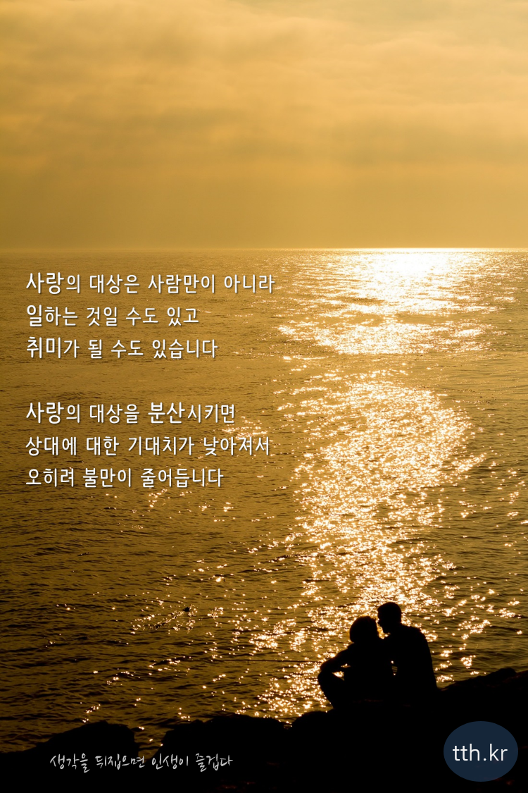

인간관계라는 것 자체가 어려운 건 사실이지만, 연애야말로 사람과 사람 사이에서 이루어지는 모든 관계 중의 최고 끝판왕이라고 할 수 있으며, 조금만 운이 안 따라줘도 바로 파토나고 먼지 한 톨만큼의 실수만으로도 깨져버리는 만큼 아주 힘들고 어려운 일이다. 단순히 어렵기만 하다면 모를까, 대부분의 사람들이 연애만큼은 청춘이 가기 전에 반드시 하고 싶어하는 경우가 많아 십대 후반에서 이십대까지 연애와 관련된 문제로 억장이 무너지는 듯한 심리적 고통에 시달리게 된다.
연애를 통해 상대방을 알아나가며 사랑을 맺는 모습은 동화부터 시작해서 드라마나 영화에 이르기까지 많은 이야기로 다뤄지며, 많은 사람들이 사랑을 노래하면서 연애의 아름다운 면모가 사람에게 얼마나 좋은 영향을 주는지도 보여주고 있다. 물론 이런 이야기들 모두가 조금이라도 결점이 있다면 연애를 하기 어려운 이 시대를살아가는 현대인에게는 그저 고통스럽게 다가올 뿐이다.
상대적으로 단순명백한 감정인 희노애락과는 달리 도저히 그 정의를 내릴 수가 없는 오묘한 감정. '슬픈 연민', '아낌', '무엇이든 줄 수 있는 것' 등 사랑을 정의하려는 수많은 시도가 있었으나 어느 것도 딱 들어맞지 않았다. 그렇기에 이 감정은 인류의 예술의 많은 부분을 지배해 왔으며, 주로 노래로 승화되는 편이다.
